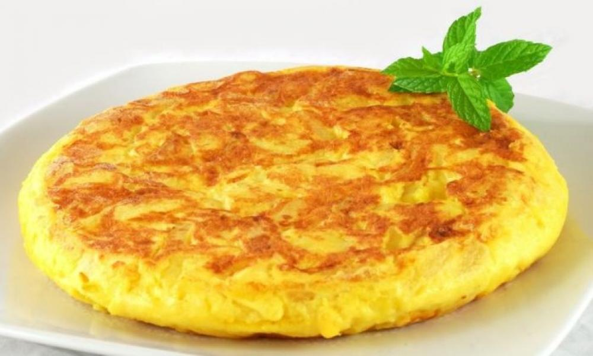

Chipsi mayai (Swahili for "chips and eggs"), also known as zege, is the most popular street food found all over Tanzania. The dish was invented in the streets of Dar es Salaam. In its most basic form, chipsi mayai is a simple potato-egg omelette. It is available in all regions of Tanzania, from the most remote villages to large towns. Food stands both indoors and on streets make them to order.
